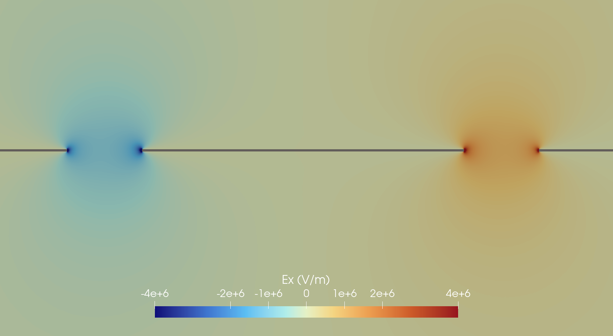

2D Coplanar Waveguide Mode Analysis
Problem description
This example demonstrates the "BoundaryMode" simulation type by computing propagation constants, effective indices, and characteristic impedance for a coplanar waveguide (CPW) cross-section. It uses a similar CPW geometry as the 3D crosstalk example but solves the 2D eigenvalue problem directly on the cross-section mesh, making it much cheaper than a full 3D driven simulation.
Two configurations are provided in the examples/cpw2d/ directory:
- Thin metal (
cpw2d_thin.json): Zero-thickness PEC traces on a dielectric substrate. - Thick metal with impedance BC (
cpw2d_thick_impedance.json): Finite-thickness traces with a surface impedance boundary condition modeling kinetic inductance.
The CPW has a center trace on a silicon substrate ($\varepsilon_r = 11.47$, $\tan\delta = 1.2 \times 10^{-7}$). The mesh length unit is $\mu\text{m}$.
Configuration
Both configurations use "Problem": {"Type": "BoundaryMode"} and request 2 modes at 5 GHz. The key solver settings are:
"BoundaryMode":
{
"Freq": 5.0,
"N": 2,
"Save": 2,
"Target": 2.497,
"Tol": 1.0e-8
}The "Target" parameter sets the effective index $n_\text{eff} = k_n / k_0$ near which the eigenvalue solver searches via shift-and-invert, where $k_n$ is the propagation constant and $k_0 = \omega / c_0$ is the free-space wavenumber. The solver finds modes with $n_\text{eff}$ closest to (but not necessarily above) the target. A value near the expected $n_\text{eff}$ (between 1 for air and $\sqrt{\varepsilon_r} \approx 3.39$ for the substrate) helps the solver converge to the desired propagating modes.
Thin metal configuration
The thin metal case (cpw2d_thin.json) uses PEC boundary conditions on the trace and ground boundaries. It also specifies impedance and voltage postprocessing with a coordinate path across the CPW gap:
"Postprocessing":
{
"Impedance":
[
{
"Index": 1,
"VoltagePath": [[518.5, 0.0], [522.0, 0.0]],
"NSamples": 200
}
],
"Voltage":
[
{
"Index": 1,
"VoltagePath": [[518.5, 0.0], [522.0, 0.0]],
"NSamples": 200
}
]
}Additionally, domain energy postprocessing and interface dielectric loss (SA, MS, MA types) are configured for energy participation ratio analysis.
Thick metal with impedance BC
The thick metal case (cpw2d_thick_impedance.json) replaces PEC boundaries with a surface impedance boundary condition that models the kinetic inductance of a superconducting film:
"Impedance":
[
{
"Attributes": [1],
"Ls": 1.332e-13
}
]The surface inductance $L_s$ adds an inductive contribution to the boundary condition, which increases the effective index of the guided modes compared to the ideal PEC case.
The figure below shows the $E_x$ component of the first propagating mode for the thick metal configuration, zoomed into the trace and gap region. The field is concentrated in the gaps between the center conductor and ground planes, with singularities at the metal corners.

Results
The mode analysis solver writes propagation constants and effective indices to mode-kn.csv and characteristic impedance to mode-Z.csv.
Effective index
For the thin metal (PEC) case, the two lowest-order modes have effective indices:
| Mode | $\text{Re}(n_\text{eff})$ | $\text{Im}(n_\text{eff})$ |
|---|---|---|
| 1 | 2.497 | $-1.19 \times 10^{-7}$ |
| 2 | 2.501 | $-1.47 \times 10^{-7}$ |
For the thick metal with impedance BC:
| Mode | $\text{Re}(n_\text{eff})$ | $\text{Im}(n_\text{eff})$ |
|---|---|---|
| 1 | 2.528 | $-1.39 \times 10^{-7}$ |
| 2 | 2.510 | $-1.31 \times 10^{-7}$ |
The impedance BC shifts the effective index upward for both modes. This is expected: the surface inductance $L_s$ increases the effective path length seen by the wave, raising $n_\text{eff}$. The shift is larger for mode 1, which has more field energy concentrated near the conductor surfaces.
Characteristic impedance
The power-voltage characteristic impedance $Z_\text{PV} = |V|^2 / P$ is computed from the voltage line integral across the CPW gap and the mode power:
| Mode | $Z_\text{PV}$ (thin PEC) | $Z_\text{PV}$ (thick impedance) |
|---|---|---|
| 1 | 38.8 Ohm | 37.5 Ohm |
| 2 | 12.2 Ohm | 11.9 Ohm |
The two modes correspond to the even and odd CPW modes, which have different impedance values. Note that the mode ordering (by propagation constant) can differ between the thin and thick configurations.